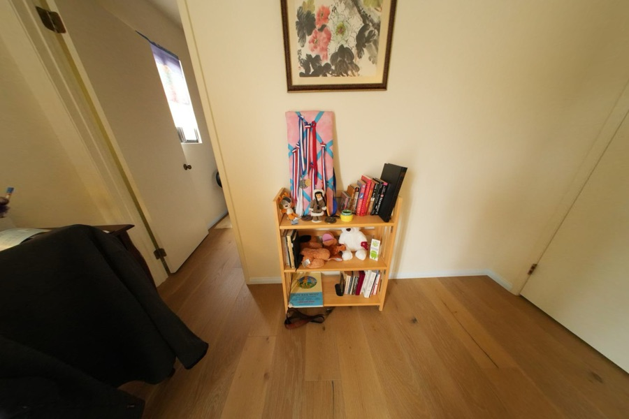
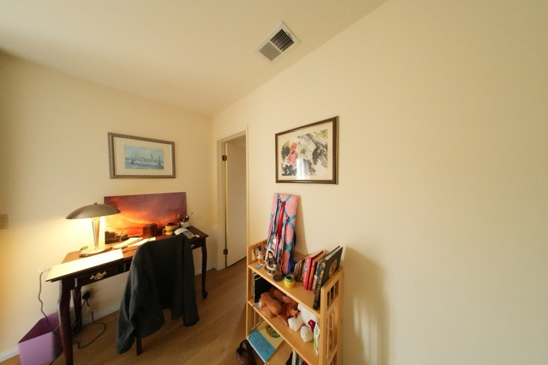
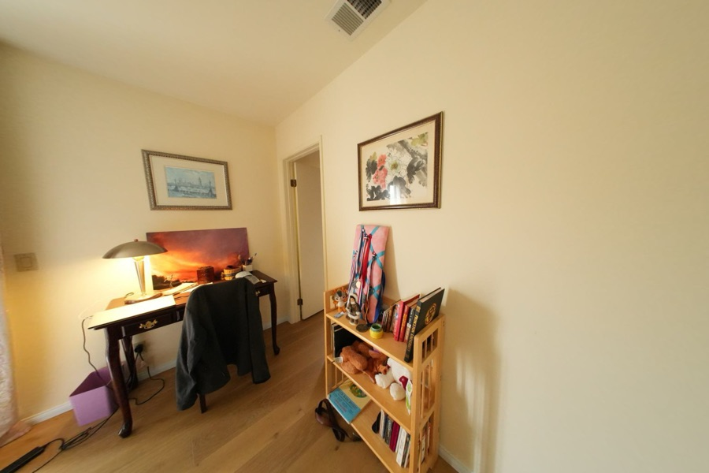
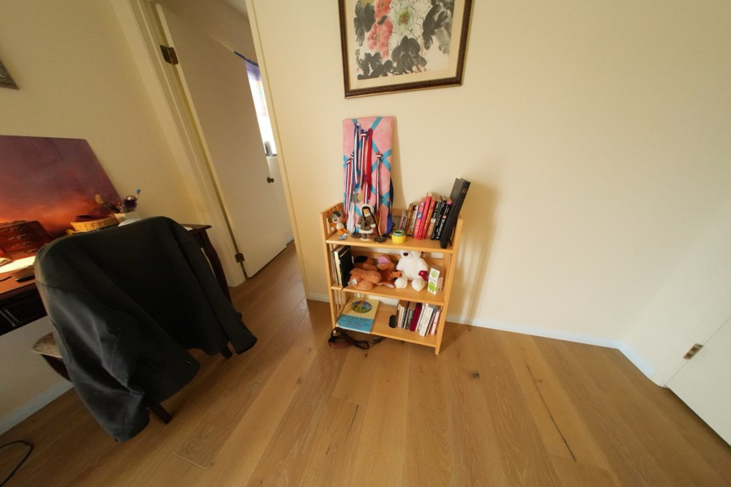
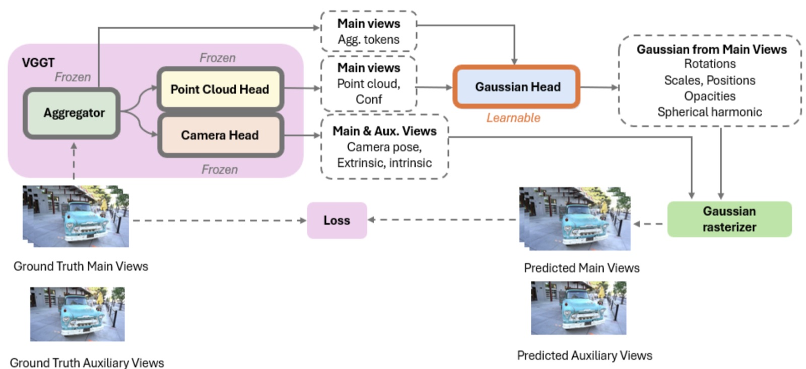

Feed-forward Gaussian Splatting Reconstruction
Standard 3DGS needs calibrated cameras and minutes of per-scene optimisation. This predicts the Gaussians directly from uncalibrated images, in one forward pass.




Overview
Two things stand between 3D Gaussian Splatting and casual capture: it wants calibrated cameras, and it optimises every scene from scratch. This project removes both. A network takes uncalibrated multi-view images and regresses the scene's Gaussians in one forward pass — no COLMAP, no per-scene loop.
Architecture

- Frozen VGGT backbone. The Visual Geometry Grounded Transformer provides camera parameters, point maps and visual tokens. Freezing it keeps the geometry prior intact and puts the entire training budget into the head.
- DPT-style Gaussian head, 32.65M parameters. Anchored on the predicted point map, it regresses a centre offset, scale, rotation, opacity and colour per Gaussian — so the head refines geometry it is handed rather than inventing it from scratch.
- Differentiable rasterisation. Predicted Gaussians are rendered back into main and auxiliary views through the
gsplatCUDA rasteriser, and supervision flows back through it.
Inference optimisation
Mixed precision, gradient-free inference and a chunked Gaussian head keep memory flat as the view count grows; combined with the gsplat CUDA rasteriser, a 14-image scene reconstructs in about one second once the model is warm.
Results — ScanNet++
| Setting | PSNR ↑ | SSIM ↑ | LPIPS ↓ |
|---|---|---|---|
| Ours — 2 views | 20.92 | 0.8379 | 0.3079 |
| Ours — 14 views | 23.00 | 0.8466 | 0.2748 |
At two views the model beats Splatt3R by 0.58 dB PSNR and 0.0459 SSIM, and outperforms pixelSplat on all three metrics. Scaling to 14 views improves scene completeness and visibly reduces structural breakage, without any change to the inference path.
Role
Project owner, working with one collaborator across the full pipeline — model design, training supervision, inference evaluation and visualisation. Code: wuh2034/Feedforward-Gaussian-Reconstruction.